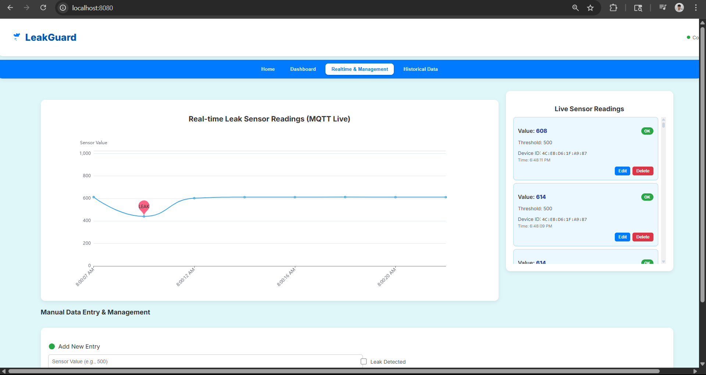

Real-Time Leak Alerts
- Live MQTT updates with clear leak status.
- Instant visual indicators for critical events.
- Low-latency telemetry for quick response.


LeakGuard was built as a final project requirement for the Embedded Systems subject. Water leaks are often unnoticed until they cause damage and high repair costs, especially in areas that are rarely checked. The system uses a NodeMCU (ESP8266), water leak/moisture sensors (YL-69 or similar), a buzzer for local alerts, a power supply, jumper wires, a breadboard, and a power adapter to deliver real-time detection and instant alerts.